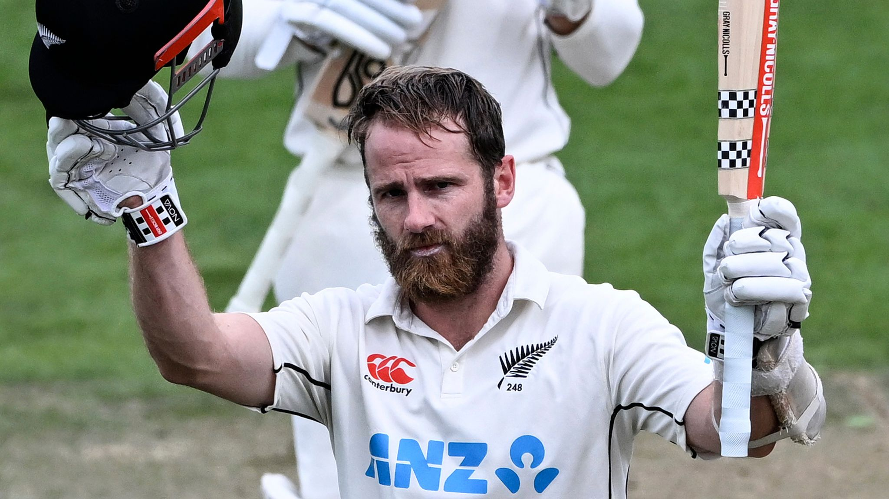

New Zealand overcame Sri Lanka by two wickets in the first test match in Christchurch thanks in large part to Kane Williamson's perfect second innings century. The Blackcaps started day five at 28 for 1, needing 257 more runs to win. With William on strike, the Blackcaps were thought to be the match's favorites, but the Sri Lankan bowlers complicated things for the home team. In the chase on Day 5, New Zealand lost 7 wickets. Before to it, Sri Lanka's first-inning score of 355 runs came through batting. The visiting team scored 302 runs in response. Afterwards, Sri Lanka scored 373 runs in their second innings, leaving only 285 runs for New Zealand.
The current captain of the New Zealand limited overs cricket team is New Zealand player Kane Stuart Williamson. Williamson surpassed all previous New Zealand test cricket run scorers on February 27, 2023. He is a right-handed batter who also occasionally bowls off spin. In December 2007, Williamson played his maiden game of first-class cricket. The same year, he played in his first U-19 game against a visiting Indian U-19 squad, and he was selected captain of the New Zealand U-19 team for the 2008 U-19 Cricket World Cup. In 2010, he made his international debut. At the 2011, 2015, and 2019 Cricket World Cups as well as the 2012, 2014, 2016, and 2021 ICC World Twenty20s, Williamson has represented New Zealand. In India for the 2016 ICC World Twenty20, he led New Zealand on a full-time basis for the first time. At the 2019 Cricket World Cup, he led New Zealand as their captain, guiding them to the championship game and earning Player of the Tournament honors. He surpassed Virat Kohli and Steve Smith to become the top-ranked Test batsman in the world on December 31, 2020, when he attained a Test batting rating of 890. Both the accolade for Test cricketer of the decade and the Sir Garfield Sobers Award for ICC Male Cricketer of the Decade were nominated for him. Together with Joe Root, Steve Smith, and Virat Kohli, Ian Chappell and Martin Crowe considered Williamson among the greatest four or five Test cricket batters of the modern era.